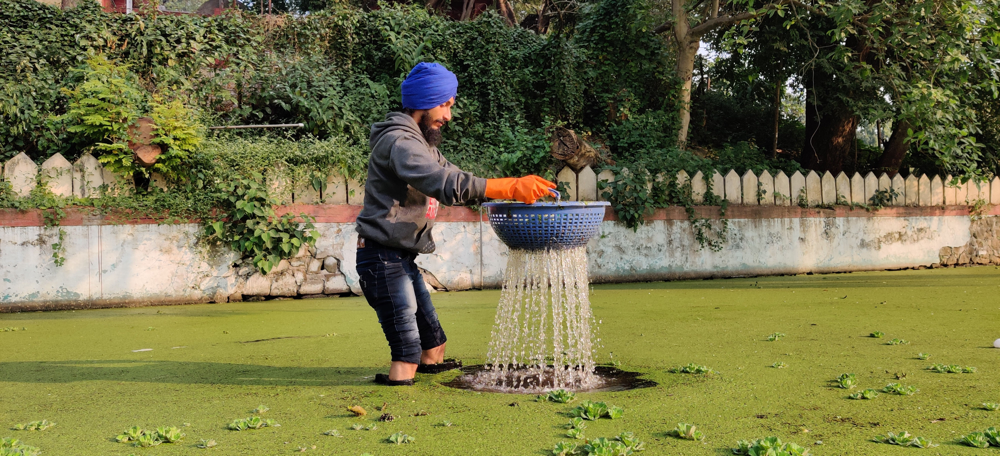

Our event promotes environment-friendly stalls to ensure a sustainable and eco-friendly experience.
Reminiscing Through IYSF




Climate Justice & ESG:
Inclusive & Integrated Sustainable Development
8th-9th March, Pune
Our event promotes environment-friendly stalls to ensure a sustainable and eco-friendly experience.
We are committed to hosting a plastic-free and low-waste event, minimizing the environmental impact.
Our efforts include minimizing the carbon footprint during the event to contribute to a greener environment.
We promote green transport by utilizing electric vehicles and cycles for commuting during the event.
Our event aligns with Sustainable Development Goals (SDGs) to contribute to global sustainability efforts.
Focus on sustainable consumption, with regional and seasonal food and beverages to reduce carbon footprint.


Professionals in the Green jobs sector will deliver presentations highlighting diverse opportunities for summer internships available in various sectors.
Presentation by different participating teams showcasing the Green Campus initiatives by their respective institutes.
Talks by field experts followed by a discussion, focusing on a range of topics of current relevance for environmental sustenance and of interest to the youth.
An interactive Q&A session with prominent personalities and government authorities.
An exhibition of the electric vehicle's ecosystem, products, and services offered by green startups.
Workshops by various experts designed towards sustainable development will provide a platform for students to learn and explore their interests.
Performing arts depicting regional diversity and culture of India with an opportunity to interact with people from various parts of India.
Entrepreneurial opportunities for youth towards sustainability.
Poster and model presentation by students and professionals focusing on research directions, promising interventions, and innovative and solution-oriented ideas towards environmental sustainability.
We are a team of passionate solutionists, with a focus on attaining SDGs through collaboration and an impact-based approach. We provide end-to-end services to corporates, institutions and organizations helping them to fulfil their commitments towards ESG Certification, CSR and community outreach. We aim to create stories of change around sustainability and use it as a medium to convince larger crowds for scaling up their scope. We follow the methodology of learning, sharing and acting with youth as a focus group whom we intend to convert into changemakers.
The Climate Project Foundation is an independent branch of The Climate Reality Project (International). It was established in March 2008 with the help of TERI. In 2009, it was incorporated as a trust in Mumbai with eminent Indians as trustees. In addition to spreading awareness about climate change through training sessions and presentations, The Climate Project Foundation (TCPF) is focused on creating future leaders through its meticulously designed flagship programs like the Green Campus Program, which is spearheading educational institutes on the path of a sustainable future. The India branch supports over 1500+ trained Climate Reality Leaders from India and South Asia region, who are taking climate actions at many levels, and approximately 1000 volunteers spread all over the country. The organization is also developing informative and educational content to sensitize and trigger climate action. TCPF has been working closely with partners and like-minded organizations, intending to strengthen India’s Paris commitments.